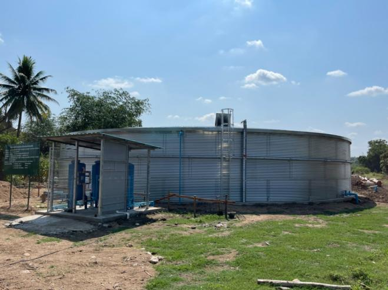

ถังเก็บน้ำ ขนาด 1,000 ลบ.ม.
องค์การบริหารส่วนตำบลแม่สลิด
โครงการก่อสร้างถังเก็บน้ำ ขนาด 1,000 ลบ.ม. หมู่ 3 บ้านแม่สลิด ต.แม่สลิด อ.บ้านตาก จ.ตาก
ขอบเขตงาน: ออกแบบ · ติดตั้ง · ส่งมอบ
ขนาด1,000 ลบ.ม.
พื้นที่อ.บ้านตาก จ.ตาก
มูลค่าโครงการ6.8 ล้านบาท
ปีที่ส่งมอบ2563